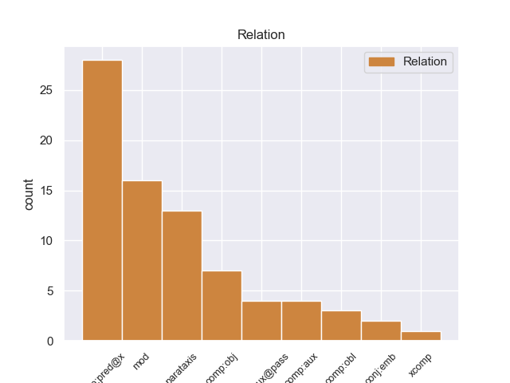
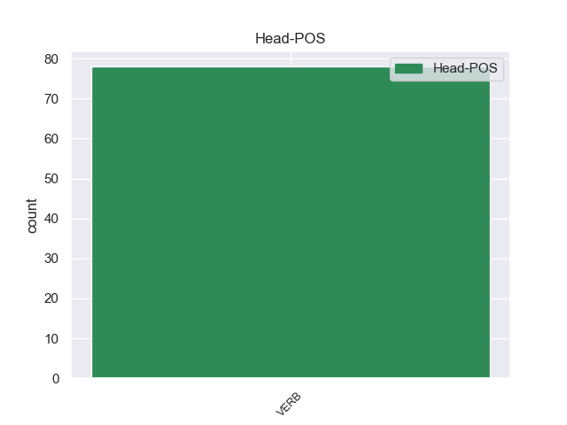
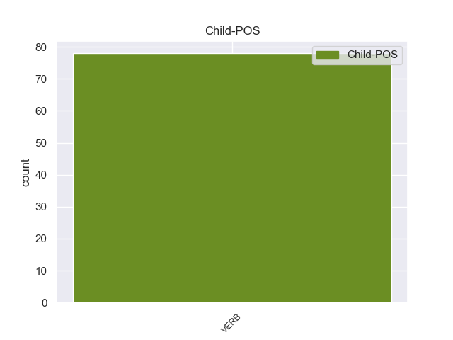

Distribution of features within this leaf



Agreement Rules sorted by frequency.
- When the dependent token is the modifer(mod) of the head token, and the head token is VERB and the dependent token is VERB.
1 Peurvuiañ _ _ _ _ 0 _ _ _
2 e _ _ _ _ 0 _ _ _
3 vez vez VERB _ Form=Ecl|Mood=Ind|Tense=Pres 0 _ _ _
4 savet _ _ _ _ 0 _ _ _
5 an _ _ _ _ 0 _ _ _
6 tourioù _ _ _ _ 0 _ _ _
7 - _ _ _ _ 0 _ _ _
8 tan _ _ _ _ 0 _ _ _
9 war _ _ _ _ 0 _ _ _
10 an _ _ _ _ 0 _ _ _
11 aodoù _ _ _ _ 0 _ _ _
12 evit _ _ _ _ 0 _ _ _
13 ma _ _ _ _ 0 _ _ _
14 c'hellfe _ _ _ _ 0 _ _ _
15 ar _ _ _ _ 0 _ _ _
16 bigi _ _ _ _ 0 _ _ _
17 hag _ _ _ _ 0 _ _ _
18 al _ _ _ _ 0 _ _ _
19 listri _ _ _ _ 0 _ _ _
20 gouzout _ _ _ _ 0 _ _ _
21 e _ _ _ _ 0 _ _ _
22 pelec'h _ _ _ _ 0 _ _ _
23 emañ _ VERB _ Number=Sing|Person=3|Polarity=Neg|Tense=Pres 3 mod _ _
24 an _ _ _ _ 0 _ _ _
25 dañjerioù _ _ _ _ 0 _ _ _
26 : _ _ _ _ 0 _ _ _
27 ( _ _ _ _ 0 _ _ _
28 kerreg _ _ _ _ 0 _ _ _
29 , _ _ _ _ 0 _ _ _
30 bazinier _ _ _ _ 0 _ _ _
31 ) _ _ _ _ 0 _ _ _
32 pe _ _ _ _ 0 _ _ _
33 e _ _ _ _ 0 _ _ _
34 pelech _ _ _ _ 0 _ _ _
35 emañ _ _ _ _ 0 _ _ _
36 ar _ _ _ _ 0 _ _ _
37 porzhioù _ _ _ _ 0 _ _ _
38 . _ _ _ _ 0 _ _ _
1 Hervez _ _ _ _ 0 _ _ _
2 ar _ _ _ _ 0 _ _ _
3 mojennoù _ _ _ _ 0 _ _ _
4 e _ _ _ _ 0 _ _ _
5 teskas teska VERB _ Form=Ecl|Mood=Ind|Tense=Past 0 _ _ _
6 d'an _ _ _ _ 0 _ _ _
7 dud _ _ _ _ 0 _ _ _
8 penaos _ _ _ _ 0 _ _ _
9 labourat _ _ _ _ 0 _ _ _
10 an _ _ _ _ 0 _ _ _
11 douar _ _ _ _ 0 _ _ _
12 hag _ _ _ _ 0 _ _ _
13 e _ _ _ _ 0 _ _ _
14 tilamas _ _ _ _ 0 _ _ _
15 an _ _ _ _ 0 _ _ _
16 antropofagiezh _ _ _ _ 0 _ _ _
17 . _ _ _ _ 0 _ _ _
18 sevel _ _ _ _ 0 _ _ _
19 a _ _ _ _ 0 _ _ _
20 reas _ VERB _ Animacy=Inan|Aspect=Perf|Gender=Masc|Number=Sing|Polarity=Pos|Tense=Past|VerbForm=Part 5 parataxis _ _
21 an _ _ _ _ 0 _ _ _
22 temploù _ _ _ _ 0 _ _ _
23 hag _ _ _ _ 0 _ _ _
24 ar _ _ _ _ 0 _ _ _
25 c'hêrioù _ _ _ _ 0 _ _ _
26 kentañ _ _ _ _ 0 _ _ _
27 . _ _ _ _ 0 _ _ _
1 Splann splann VERB _ Mood=Ind|Tense=Pres 0 _ _ _
2 e _ _ _ _ 0 _ _ _
3 weler weler VERB _ Mood=Ind|Tense=Pres 1 comp:obj _ _
4 an _ _ _ _ 0 _ _ _
5 Nil _ _ _ _ 0 _ _ _
6 eus _ _ _ _ 0 _ _ _
7 an _ _ _ _ 0 _ _ _
8 egor _ _ _ _ 0 _ _ _
9 , _ _ _ _ 0 _ _ _
10 anezhañ _ _ _ _ 0 _ _ _
11 un _ _ _ _ 0 _ _ _
12 draoñienn _ _ _ _ 0 _ _ _
13 c'hlas _ _ _ _ 0 _ _ _
14 e _ _ _ _ 0 _ _ _
15 - _ _ _ _ 0 _ _ _
16 kreiz _ _ _ _ 0 _ _ _
17 an _ _ _ _ 0 _ _ _
18 dezerzh _ _ _ _ 0 _ _ _
19 . _ _ _ _ 0 _ _ _
1 E _ _ _ _ 0 _ _ _
2 1812 _ _ _ _ 0 _ _ _
3 voe _ VERB _ Mood=Ind|Number=Sing|Person=3|Tense=Past|VerbForm=Fin 0 _ _ _
4 rannet _ VERB _ Tense=Past|VerbForm=Part 3 comp:pred@x _ _
5 e _ _ _ _ 0 _ _ _
6 3 _ _ _ _ 0 _ _ _
7 arondisamant _ _ _ _ 0 _ _ _
8 : _ _ _ _ 0 _ _ _
1 Liammet liammet VERB _ Mood=Ind|Tense=Pres 0 _ _ _
2 - _ _ _ _ 0 _ _ _
3 strizh _ _ _ _ 0 _ _ _
4 emañ _ VERB _ Number=Sing|Person=3|Polarity=Neg|Tense=Pres 1 comp:obl _ _
5 ouzh _ _ _ _ 0 _ _ _
6 sothoeg _ _ _ _ 0 _ _ _
7 an _ _ _ _ 0 _ _ _
8 norzh _ _ _ _ 0 _ _ _
9 ha _ _ _ _ 0 _ _ _
10 sothoeg _ _ _ _ 0 _ _ _
11 ar _ _ _ _ 0 _ _ _
12 Su _ _ _ _ 0 _ _ _
13 . _ _ _ _ 0 _ _ _
1 E _ _ _ _ 0 _ _ _
2 1563 _ _ _ _ 0 _ _ _
3 e _ _ _ _ 0 _ _ _
4 voe _ _ _ _ 0 _ _ _
5 anvet _ _ _ _ 0 _ _ _
6 Giorgio _ _ _ _ 0 _ _ _
7 Blandrata _ _ _ _ 0 _ _ _
8 da _ _ _ _ 0 _ _ _
9 vezeg _ _ _ _ 0 _ _ _
10 al _ _ _ _ 0 _ _ _
11 lez _ _ _ _ 0 _ _ _
12 ha _ _ _ _ 0 _ _ _
13 levezonet _ VERB _ Tense=Past|VerbForm=Part 15 comp:aux _ _
14 e _ _ _ _ 0 _ _ _
15 voe _ VERB _ Mood=Ind|Number=Sing|Person=3|Tense=Past|VerbForm=Fin 0 _ _ _
16 muioc'h _ _ _ _ 0 _ _ _
17 - _ _ _ _ 0 _ _ _
18 mui _ _ _ _ 0 _ _ _
19 gant _ _ _ _ 0 _ _ _
20 ar _ _ _ _ 0 _ _ _
21 mennozhioù _ _ _ _ 0 _ _ _
22 relijiel _ _ _ _ 0 _ _ _
23 taer _ _ _ _ 0 _ _ _
24 prezeget _ _ _ _ 0 _ _ _
25 gantañ _ _ _ _ 0 _ _ _
26 speredoù _ _ _ _ 0 _ _ _
27 ar _ _ _ _ 0 _ _ _
28 roue _ _ _ _ 0 _ _ _
29 yaouank _ _ _ _ 0 _ _ _
30 Yann _ _ _ _ 0 _ _ _
31 II _ _ _ _ 0 _ _ _
32 hag _ _ _ _ 0 _ _ _
33 an _ _ _ _ 0 _ _ _
34 eskob _ _ _ _ 0 _ _ _
35 kalvinat _ _ _ _ 0 _ _ _
36 Frañsez _ _ _ _ 0 _ _ _
37 David _ _ _ _ 0 _ _ _
38 . _ _ _ _ 0 _ _ _
1 Kaset _ _ _ _ 0 _ _ _
2 e _ _ _ _ 0 _ _ _
3 voent _ VERB _ Gender=Fem,Masc|HebBinyan=HITPAEL|Number=Plur|Person=3|Tense=Past 0 _ _ _
4 neuze _ _ _ _ 0 _ _ _
5 da _ _ _ _ 0 _ _ _
6 gamp _ _ _ _ 0 _ _ _
7 Westerbork _ _ _ _ 0 _ _ _
8 da _ _ _ _ 0 _ _ _
9 gentañ _ _ _ _ 0 _ _ _
10 , _ _ _ _ 0 _ _ _
11 ha _ _ _ _ 0 _ _ _
12 d'an _ _ _ _ 0 _ _ _
13 21 _ _ _ _ 0 _ _ _
14 a _ _ _ _ 0 _ _ _
15 viz _ _ _ _ 0 _ _ _
16 Gwengolo _ _ _ _ 0 _ _ _
17 e _ _ _ _ 0 _ _ _
18 voent _ VERB _ Gender=Fem,Masc|HebBinyan=HITPAEL|Number=Plur|Person=3|Tense=Past 3 conj:emb _ _
19 lakaet _ _ _ _ 0 _ _ _
20 en _ _ _ _ 0 _ _ _
21 tren _ _ _ _ 0 _ _ _
22 diwezhañ _ _ _ _ 0 _ _ _
23 war _ _ _ _ 0 _ _ _
24 - _ _ _ _ 0 _ _ _
25 du _ _ _ _ 0 _ _ _
26 Auschwitz _ _ _ _ 0 _ _ _
27 . _ _ _ _ 0 _ _ _
1 An _ _ _ _ 0 _ _ _
2 efed _ _ _ _ 0 _ _ _
3 a _ _ _ _ 0 _ _ _
4 voe _ VERB _ Gender=Masc|Number=Sing|Person=3|Tense=Past 0 _ _ _
5 distrujadur _ _ _ _ 0 _ _ _
6 ar _ _ _ _ 0 _ _ _
7 begennoù _ _ _ _ 0 _ _ _
8 roumaneg _ _ _ _ 0 _ _ _
9 o _ _ _ _ 0 _ _ _
10 yezh _ _ _ _ 0 _ _ _
11 , _ _ _ _ 0 _ _ _
12 hag _ _ _ _ 0 _ _ _
13 a _ _ _ _ 0 _ _ _
14 voent _ VERB _ Gender=Fem,Masc|HebBinyan=HITPAEL|Number=Plur|Person=3|Tense=Past 4 xcomp _ _
15 erlec'hiet _ _ _ _ 0 _ _ _
16 gant _ _ _ _ 0 _ _ _
17 slaviz _ _ _ _ 0 _ _ _
18 . _ _ _ _ 0 _ _ _
Disagree Examples:
1 Pa _ _ _ _ 0 _ _ _
2 vez _ _ _ _ 0 _ _ _
3 distaget _ _ _ _ 0 _ _ _
4 ur _ _ _ _ 0 _ _ _
5 sonenn _ _ _ _ 0 _ _ _
6 a _ _ _ _ 0 _ _ _
7 - _ _ _ _ 0 _ _ _
8 gostez _ _ _ _ 0 _ _ _
9 e _ _ _ _ 0 _ _ _
10 vez vez VERB _ Aspect=Hab|Mood=Ind|Number=Sing|Person=3|Polarity=Pos|Tense=Pres 0 _ _ _
11 leusket leuske VERB _ Tense=Past|VerbForm=Part 10 comp:pred@x _ _
12 an _ _ _ _ 0 _ _ _
13 aer _ _ _ _ 0 _ _ _
14 da _ _ _ _ 0 _ _ _
15 dremen _ _ _ _ 0 _ _ _
16 dre _ _ _ _ 0 _ _ _
17 kostezennoù _ _ _ _ 0 _ _ _
18 an _ _ _ _ 0 _ _ _
19 teod _ _ _ _ 0 _ _ _
20 ha _ _ _ _ 0 _ _ _
21 n'eo _ _ _ _ 0 _ _ _
22 ket _ _ _ _ 0 _ _ _
23 dre _ _ _ _ 0 _ _ _
24 penn _ _ _ _ 0 _ _ _
25 an _ _ _ _ 0 _ _ _
26 teod _ _ _ _ 0 _ _ _
27 . _ _ _ _ 0 _ _ _
1 Implijet _ VERB _ Tense=Past|VerbForm=Part 0 _ _ _
2 e _ _ _ _ 0 _ _ _
3 vez _ VERB _ Aspect=Hab|Mood=Ind|Number=Sing|Person=3|Polarity=Pos|Tense=Pres 1 comp:obj _ _
4 e _ _ _ _ 0 _ _ _
5 kerveveureg _ _ _ _ 0 _ _ _
6 ivez _ _ _ _ 0 _ _ _
7 evit _ _ _ _ 0 _ _ _
8 ober _ _ _ _ 0 _ _ _
9 diouzh _ _ _ _ 0 _ _ _
10 ar _ _ _ _ 0 _ _ _
11 son _ _ _ _ 0 _ _ _
12 [ _ _ _ _ 0 _ _ _
13 ð _ _ _ _ 0 _ _ _
14 ] _ _ _ _ 0 _ _ _
1 Setu _ _ _ _ 0 _ _ _
2 penaos _ _ _ _ 0 _ _ _
3 e _ _ _ _ 0 _ _ _
4 vez vez VERB _ Aspect=Hab|Mood=Ind|Number=Sing|Person=3|Polarity=Pos|Tense=Pres 0 _ _ _
5 renket renke VERB _ Tense=Past|VerbForm=Part 4 comp:aux@pass _ _
6 yezhoù _ _ _ _ 0 _ _ _
7 karibeg _ _ _ _ 0 _ _ _
8 ar _ _ _ _ 0 _ _ _
9 su _ _ _ _ 0 _ _ _
10 hervez _ _ _ _ 0 _ _ _
11 Ethnologue _ _ _ _ 0 _ _ _
12 ( _ _ _ _ 0 _ _ _
13 [ _ _ _ _ 0 _ _ _
14 1 _ _ _ _ 0 _ _ _
15 ] _ _ _ _ 0 _ _ _
16 ) _ _ _ _ 0 _ _ _
17 : _ _ _ _ 0 _ _ _
1 E _ _ _ _ 0 _ _ _
2 - _ _ _ _ 0 _ _ _
3 barzh _ _ _ _ 0 _ _ _
4 an _ _ _ _ 0 _ _ _
5 daou _ _ _ _ 0 _ _ _
6 interval _ _ _ _ 0 _ _ _
7 etre _ _ _ _ 0 _ _ _
8 ar _ _ _ _ 0 _ _ _
9 pycnon _ _ _ _ 0 _ _ _
10 hag _ _ _ _ 0 _ _ _
11 ar _ _ _ _ 0 _ _ _
12 rest _ _ _ _ 0 _ _ _
13 ( _ _ _ _ 0 _ _ _
14 mi _ _ _ _ 0 _ _ _
15 - _ _ _ _ 0 _ _ _
16 sol _ _ _ _ 0 _ _ _
17 hà _ _ _ _ 0 _ _ _
18 si _ _ _ _ 0 _ _ _
19 - _ _ _ _ 0 _ _ _
20 re _ _ _ _ 0 _ _ _
21 ) _ _ _ _ 0 _ _ _
22 e _ _ _ _ 0 _ _ _
23 vez _ VERB _ Form=Ecl|Mood=Ind|Tense=Pres 0 _ _ _
24 placet placet VERB _ Tense=Past|VerbForm=Part 23 comp:pred@x _ _
25 a _ _ _ _ 0 _ _ _
26 - _ _ _ _ 0 _ _ _
27 wezhioù _ _ _ _ 0 _ _ _
28 notennoù _ _ _ _ 0 _ _ _
29 à _ _ _ _ 0 _ _ _
30 eil _ _ _ _ 0 _ _ _
31 renk _ _ _ _ 0 _ _ _
32 , _ _ _ _ 0 _ _ _
33 distabil _ _ _ _ 0 _ _ _
34 : _ _ _ _ 0 _ _ _
35 ar _ _ _ _ 0 _ _ _
36 pyen _ _ _ _ 0 _ _ _
37 - _ _ _ _ 0 _ _ _
38 où _ _ _ _ 0 _ _ _
39 ( _ _ _ _ 0 _ _ _
40 ger _ _ _ _ 0 _ _ _
41 o _ _ _ _ 0 _ _ _
42 tont _ _ _ _ 0 _ _ _
43 deus _ _ _ _ 0 _ _ _
44 ar _ _ _ _ 0 _ _ _
45 chineseg _ _ _ _ 0 _ _ _
46 ) _ _ _ _ 0 _ _ _
1 Redirecting redirect VERB _ Tense=Pres|VerbForm=Part 0 _ _ _
2 to _ _ _ _ 0 _ _ _
3 Gwener _ _ _ _ 0 _ _ _
4 ( _ _ _ _ 0 _ _ _
5 doueez doueez VERB _ Tense=Past|VerbForm=Part 1 parataxis _ _
6 ) _ _ _ _ 0 _ _ _